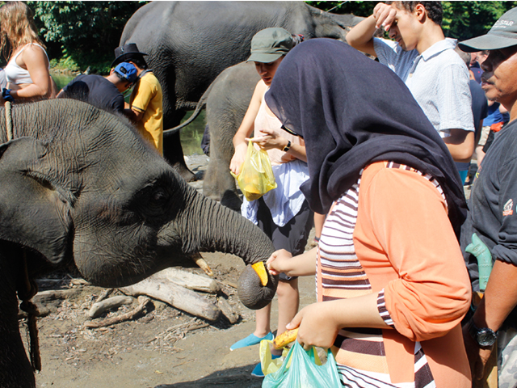
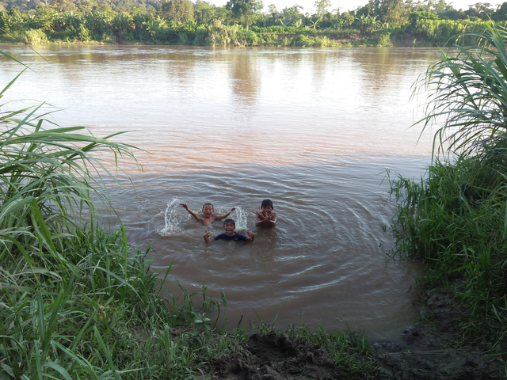
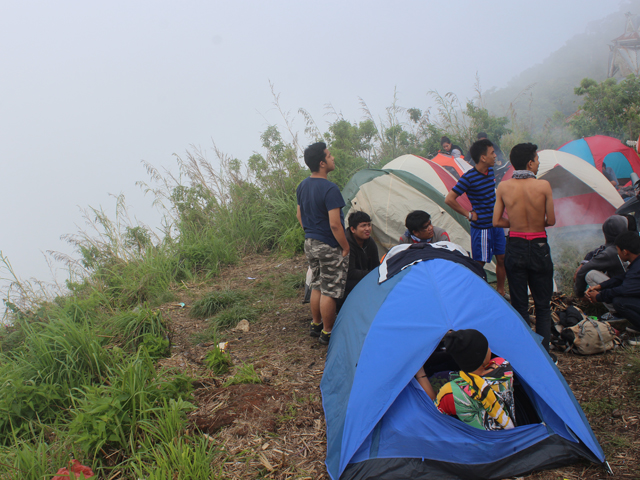

Tangkahan, Surga Tersembunyi Bagi Kelangsungan Hidup Gajah Sumatra
Setelah bertahun-tahun lamanya membangun mimpi, akhirnya satu per satu
mulai terwujud. Pertama kali tahu Tangkahan itu apa pada tahun 2015 silam
dan sejak saat itu jugalah aku mulai berusaha menabung untuk jalan-jalan
ke Tangkahan. Mulai nyari-nyari informasi di google juga mengenai biaya
ke sana, akses, dan segala macam hal yang harus dipersiapkan. Namun berkat
segala usaha yang tak maksimal, aku baru berhasil ke sana pada bulan ini.
Sesampainya di sana, aku langsung menanyakan nama-nama gajah dan mencari
gajah yang bernama Yuni. Sebab di majalah mahasiswa yang aku baca, salah
satu gajah di sana ada yang bernama Yuni.

Pertama Kali Masuk Desa
Siang itu aku bersama Randy si pengajar muda pendahulu berangkat ke desa
dengan mengendari motor dinas sekolah. Menurut cerita, motor ini sudah
dipakai dari generasi terdahulu dan sudah turun temurun hingga saat ini.
Aku yakin kondisi motor ini sudah tidak terlalu baik. Pantatku lumayan
sakit ketika motor melaju di atas jalanan yang terdiri dari baru kerikil
dengan medan yang naik turun. Setelah tiga puluh menit berkendara,
sampailah kami di desa. Randy mengajakku berkenalan dengan orangtua
angkatnya terlebih dahulu. Mamanya sangat baik. Secara otomatis aku
langsung berdoa. Semoga saja orangtua angkatku merupakan orang yang
sangat baik.

Create the Moment!
Seumur-umur, aku baru dua kali berkemah. Sejak masuk sekolah dasar
hingga kuliah, aku tidak pernah mendapatkan izin untuk bergabung ekskul
Pramuka. Kata Ibuku, mending ikut membantu di ladang atau membereskan
pekerjaan rumah daripada pergi berkemah. Saat berkemah itu dingin,
tak ada kasur, banyak nyamuk, dan tubuh akan berbau asap ketika mengikuti
acara api unggun di malam harinya.
Aku salah satu anak penurut. Aku ikut apa kata Ibu saja.